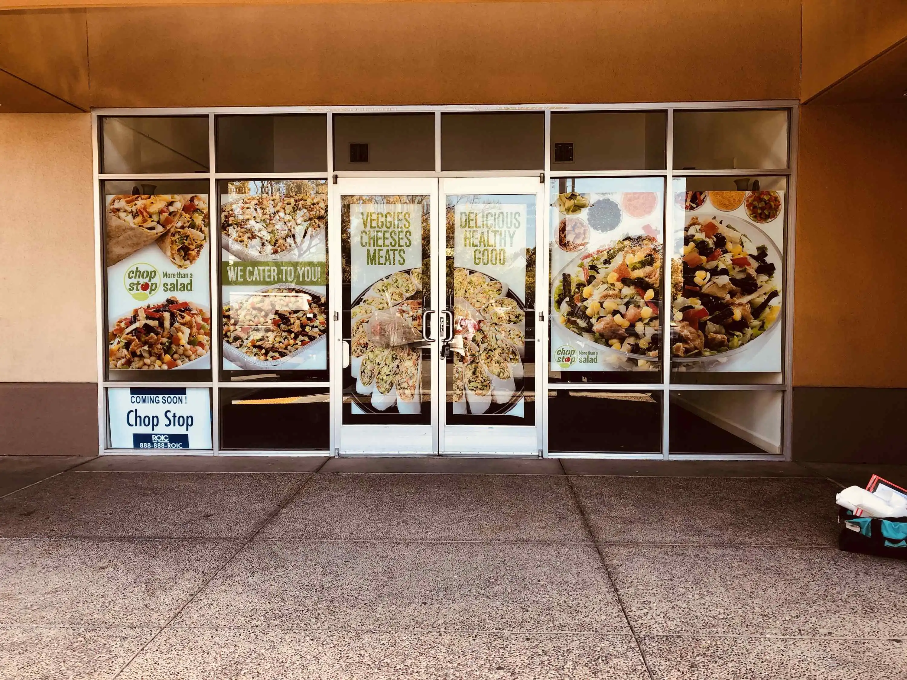
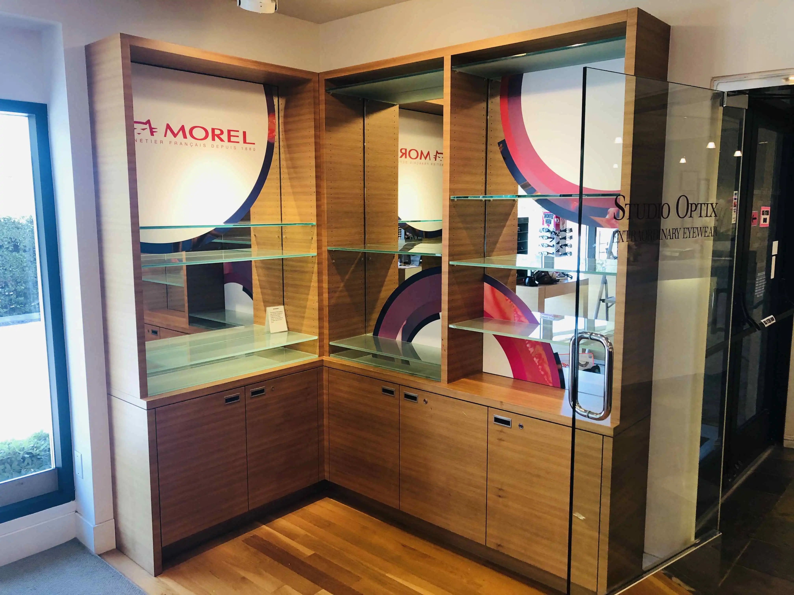
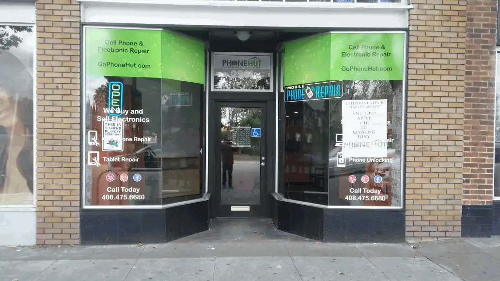
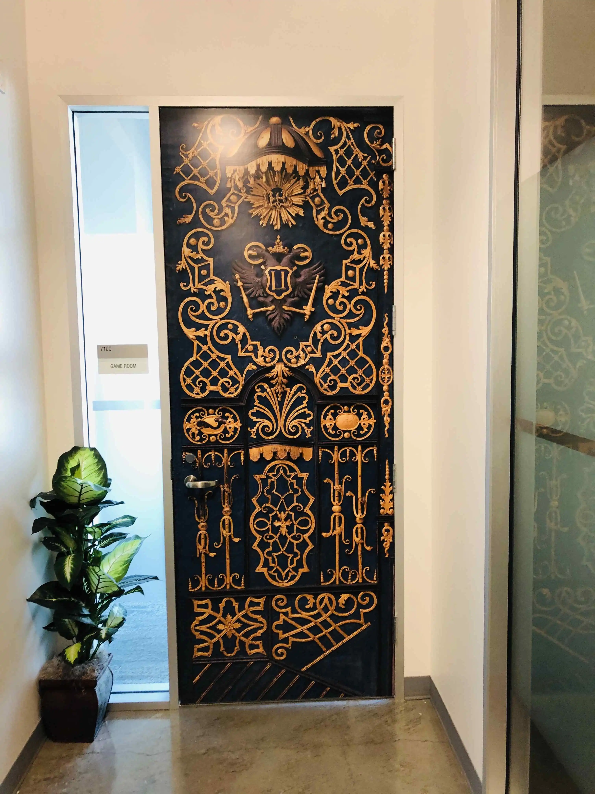

Installed Work
Window Graphics We've Installed
 China Unicom · Custom Cut Frosted Glass
China Unicom · Custom Cut Frosted Glass
 Mirantis · Custom Cut Door Frost
Mirantis · Custom Cut Door Frost
Window Graphics We've Installed
Across Silicon Valley
Storefronts, office suites, conference rooms, and retail windows — every application of commercial window vinyl.

Chop Stop · Digital Print Window Wrap
Morel · Custom Vinyl Window Decal
Phone Hut · Retail Window Decal Graphics
Ring (Amazon) · Brand Identity Door Wrap
China Unicom · Custom Cut Frosted Glass
Mirantis · Custom Cut Door Frost